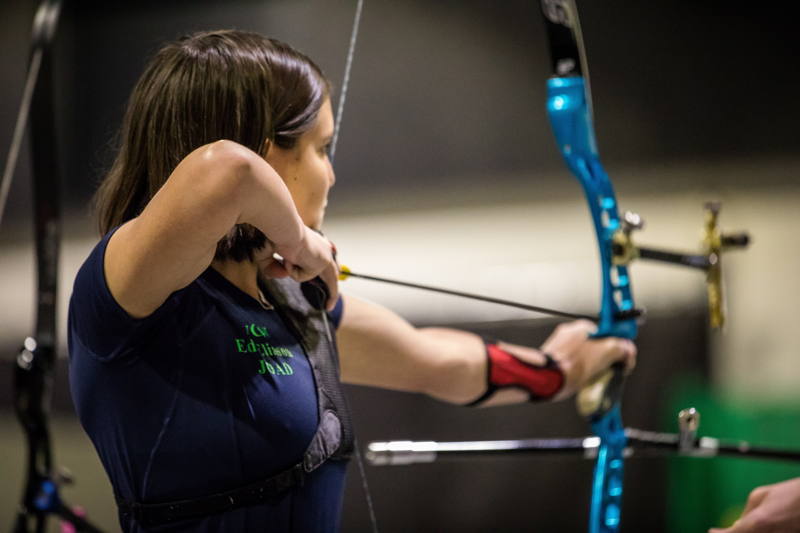
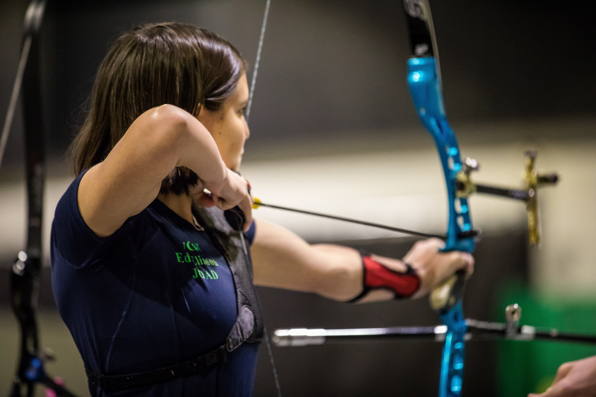

About Me
My name is Mikaelyn and I go to the University of Washington Bothell.
I am currently pursuing a bachelor's degree in Mathematical Thinking and Visualization.
Expected Graduation Quarter: Spring 2020
- Archery - I have been doing archery since the summer of 2013.
- Walking my dog - I have a 11 month old Springer Spaniel Puppy that takes much of my free time.
- Volunteering- I enjoy volunteering to help both people and animals!
What I do in my free time
Education
| School | Dates | Degree |
|---|---|---|
| University of Washington Bothell | September 2018 - present | Pursuing a bachelor's degree in Mathematical Thinking and Visualization with a possible double major in Law, Economics and Public Policy |
| Cascadia College | September 2016 - June 2018 | Associate's degree in Integrated Studies |
| Inglemoor High School | September 2015 - June 2018 | High School Diploma |
 


This is a visualization I made with Edmonds School District Data